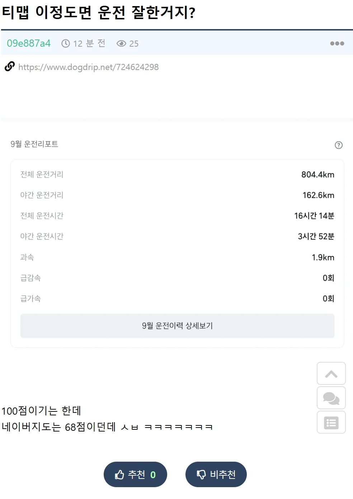
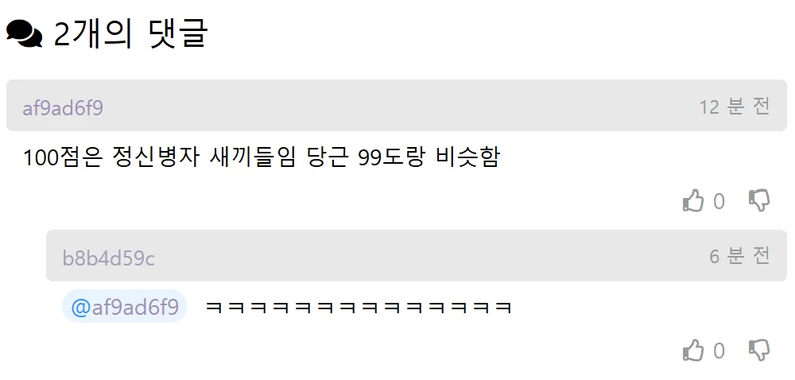

800km 주행에 과속 1.9km ㄷㄷㄷ


800km 주행에 과속 1.9km ㄷㄷㄷ
앵 그정도야?? 나도 100점인데 1300키로에 과속 4.8임
나 네이버기준으로 지난주 524.7km에 과속거리 16m던데 점수는 99점
고속도로 타면 충분히 가능하지
1차선 정속하는 새끼들만 아니면 뭐라할 이유도 없고
도로에서 만나기 싫음
시내 주행이면 그냥 박아 버릴래
같이 뒤지자 내 한몸 희생한다
저게 정상인데 오히려 욕하는애들이 이상한거 최대속도를 최소속도로 이해하는고 욕하는게 참..
ㄹㅇ 1차선으로 추월하면 되지
1차선에서 그지랄하고있으니 문제임
전국민이 다같이 저렇게 운전하는게 딱 일본인데 가서 차 타보면 이게 옳게 된 나라라는 생각이 듦
일본 신기하게 시내에 차 ㅈㄴ없더라
지랄 고속도로 안타봄? 과속 ㅈㄴ 밟음
일본도 똑같음
일본에서 운전 안해봤나보네. 규슈 혼슈 북해도 할거없이 고속도로 올라가면 프리우스나 경차들도 과속 조낸 땡기는데 ㅋㅋ
나 출근길 고속도로 대부분인데
안막히기까지하니까 연비올릴려고 2차로에서 정속주행하니까 점수 떡상하더라고
저게왜? 나도저런데 걍 2차선에서 앞차 거리두고 따라기가만함 추월도 화물차있을때만 하고 바로 2차로 복ㅈ귀함
선비운전 해도 급출발 급가속 했다고 억까 당할때 한번씩 있어서 빡쳐서 안쓰게됨
평소에 올라가다가 명절에 10-20점씩 떡락하길 반복하는데
대단하십니다.
존경합니다.
다만 로상에선 내 앞에 있진 마시오.
난 네이버 100점..
출퇴근길만 하니까 길 막혀서 자동으로 100점 됨
내부순환 맨날 막혀서 ㅋ
티맵은 100점받기 쉬움
저게 무슨 의미인지 정확하게 설명해줌
네이버 네비는 평소에 쓰는거고
t맵 네비는 자동차보험 가입기간에 쓰는거야.
점수에 따라 보험료 할인이 붙어서
특정 기간에만 평소에 안쓰던 네비로 넘어가서
1개월 이내 운전기록을 쌓고 존나존나존나
안전하게 운전해서 점수를 95점 이상으로 만드는거
그래야 보험료 할인 구간이 제일 높음
나도 그렇게 하기때문에 잘 알지.
운전 찐초보시절에서는 항상 98점~100점
운전 3년차부터 지금까지 항상 61점~69점
가속 감속 없는거보니까 고속도로에서만 켜서 점수 만든거네 1차선 정속충만 아니면 문제없지
시내운전 하는데 급가속은 미친척하고 할수있어도 급감속은 없을수가 없음
네이버점수는 대체 81점 이상 어떻게 올리는거냐
존나 예민해 미친것이
밤에 운전 많이 하는 직업이라 밤에 운전하는데 밤에 운전한다고 점수를 깎아
보험료 할인 받으려고 고속도로에서만 티맵 켜서 이번에 96점 찍었다
보험 갱신 하기 전 까진 티맵 처다도 안봐야지
급가속 급감속 억까로 점수 떨어지니까 스트레스 받더라
과속제한속도에서 +15키로까진 봐주지않나
티맵이 과속은 좀 널널하더라
15km/h 초과까진 봐주고
과속 자체도 조금이면 점수에 큰 영향 안주는 것 같음
근데 급감속에 너무 민감해서
신호 애매하게 받거나 앞에 무슨 일 있어서 브레이크 밟으면 바로 급감속으로 점수 떨궈버리더라
네이버지도 써봐라 티맵은 급감속 급가속 선녀급임 ㅋㅋㅋ
티맵 100점 네이버 89점인데 ㅋㅋㅋ
지하철이나 버스타면서 네비 키는 새끼들 있더라
71점 인데 ㅅㅂ
저거 가지고 도대체 왜 욕하는거임?
고속도로 1차로에서 저짓거리 안하는거면 되는거 아니냐?
나는 도대체가 누가 정상이고 비정상인지 모르겄다.
도로교통법규도 법인데 왜 음주운전에만 엄격하고 과속운전에는 너그럽냐 둘다 사고나면 위험한거 아니냐.
우리나라 운전 문화가 개씹병신이라 그럼
티맵은 고속도로 탈 때 보험사 점수용으로 95점이상 유지 그외에 항상 네이버지도
저거 얼척없는게, 아간운전한다고 점수를 까고있음.
고속도로에서 크루즈 켜고 다니면 100점 쉽지. 근데 시내 들어와서 신호 바뀌며 급정거에 점수 폭락
후진국마인드 굿
무습다